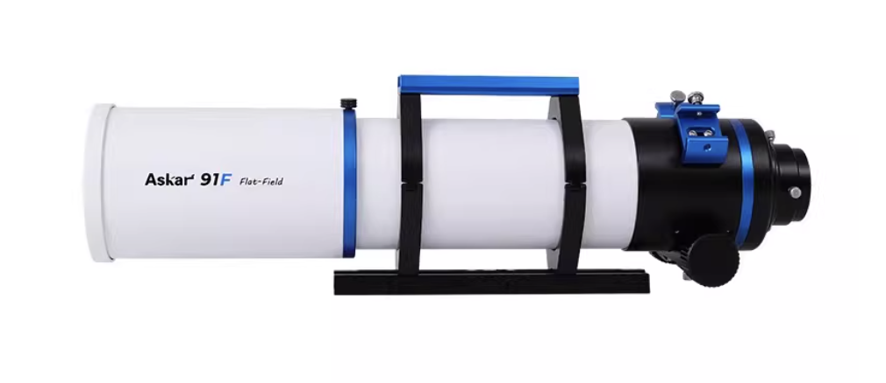
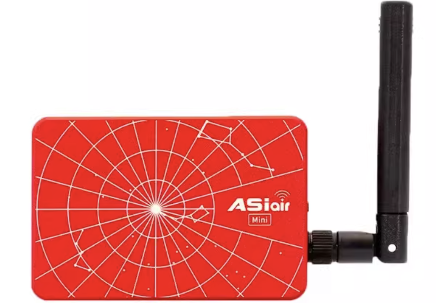
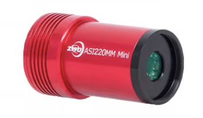
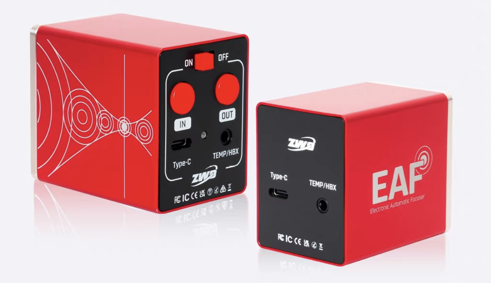
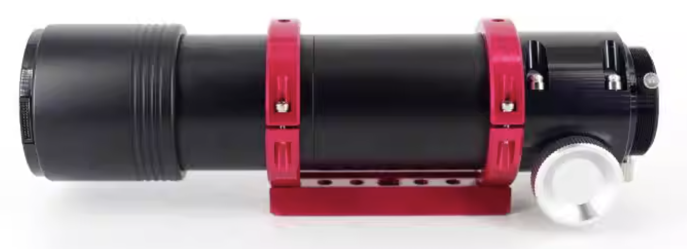

加入我们
如果你也对这个烧钱且费力的项目感兴趣.....那就让我来先为你介绍一下拍摄的设备吧
赤道仪

晴空 ST17-R

赤道仪在天文摄影中的作用，就是让相机“跟着星星一起走”。因为地球一直在转，相应的，星空也一直在缓慢的变化。如果不用赤道仪，星星在长曝光里会被拉成一条线，变成星轨。
相机

ZWO 2600MC Pro
普通相机和冷冻相机皆可，冷冻相机对于常规相机的升级点在于热噪点的减少。这个在tips中会详细讲。
主镜
锐星 91F
主镜负责把宇宙中极其微弱的星光尽可能多地收集并精确聚焦，决定了你能拍到多少亮度、多少细节以及画面的整体视角。
天文盒子
ZWO ASIAIR Mini Box
可以说是新时代天文摄影最大的革新之一，作为整个系统的“大脑”。通过手机即可控制相机、赤道仪、导星、调焦、滤镜轮等，实现自动对焦、自动导星、自动曝光和拍摄序列。免去了以往需要使用电脑复杂程序的繁琐步骤。
导星相机
ZWO 220 Mini
寻星相机的作用是“盯住一颗星”，把星点的偏移实时反馈给赤道仪做微调修正。 这样长时间曝光时星点才不会漂移，画面也更容易堆栈出清晰细节。
电调焦
ZWO EAF
电调焦负责精确控制焦点位置。夜晚温差变化会让焦点慢慢跑掉， 有了电调焦就能远程微调甚至自动对焦，让星点更圆、细节更锐。
寻星镜
2047 导星镜
寻星镜相当于导星系统的“小望远镜”，专门给寻星相机提供更清晰的导星视野。 它不负责最终成像，只负责稳定追踪，让主镜安心长曝收集微弱光线。
评论